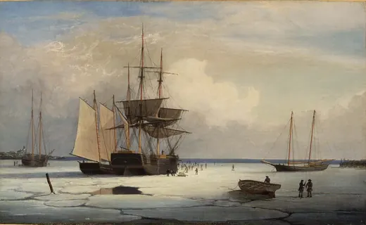

Trails
Trails through painted Gloucester
Routes that link the places in the paintings, with a map, directions and sources for every stop. Each one works as a walk, a drive or both.
- Trail · by car, with a walk on Rocky NeckWomen of Cape AnnTen stops for the women who painted Gloucester, from Fitz Henry Lane’s circle in the 1850s to Nell Blaine’s harbor in the 1950s.A full day by car
- Trail · a downtown walk, then a driveEdward Hopper’s GloucesterHopper came to Gloucester in 1912 with his friend Leon Kroll, and again in the summers of 1923, 1924, 1926 and 1928, mostly painting houses in watercolor.About four hours, walk and drive
- Trail · East GloucesterRothko, Avery and GottliebIn 1932 Milton Avery invited two young New York painters, Mark Rothko and Adolph Gottlieb, to Gloucester.Half a day
 Layer · the harbor at workThe working waterfrontFish flakes, dories, schooners and nets: what the painters were looking at.5 places · 6 terms
Layer · the harbor at workThe working waterfrontFish flakes, dories, schooners and nets: what the painters were looking at.5 places · 6 terms
SeasonPainting in winterLow light, sea smoke and empty beaches, with the sun’s times for every month.November to March
Many stops are private homes or working wharves. Look from public ways, keep sidewalks and driveways clear, and ask before painting people.